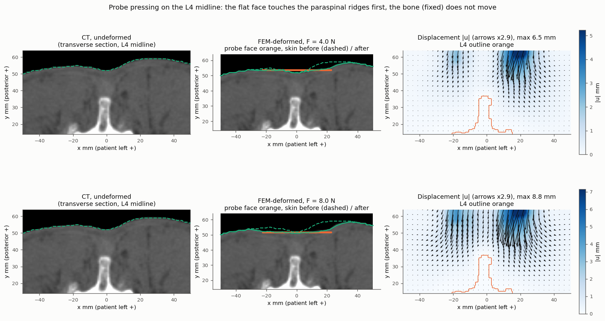
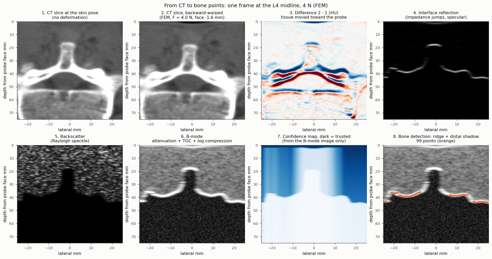
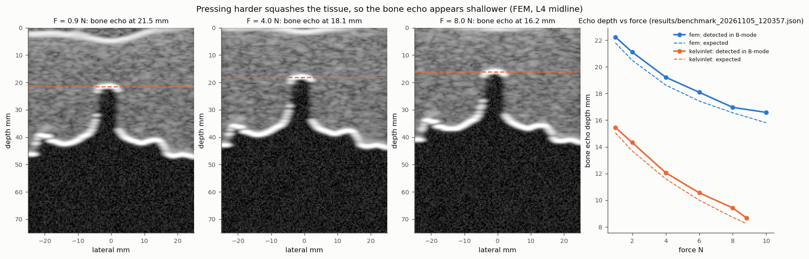
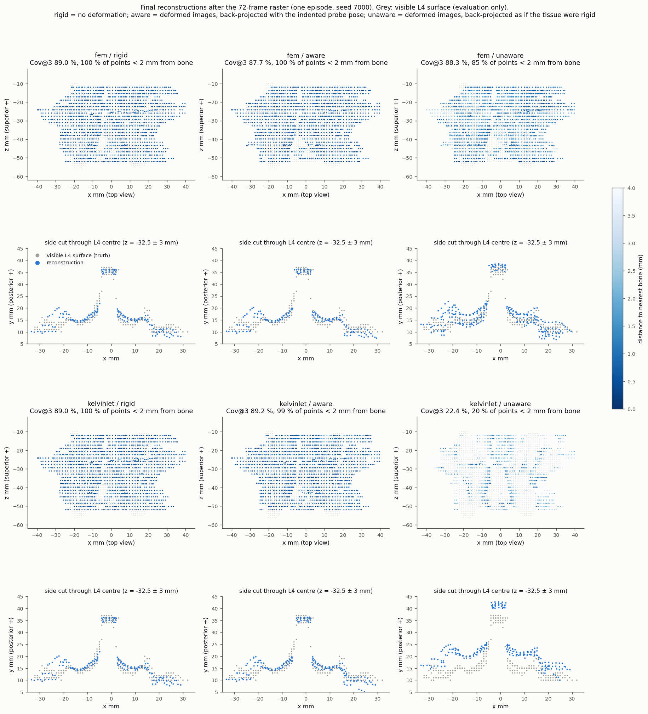
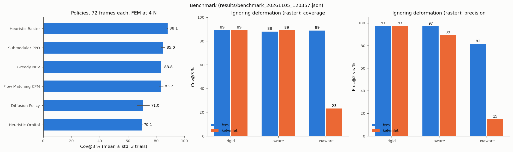
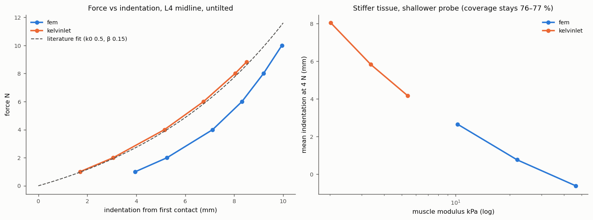

<title>Soft-Tissue Deformation Progress</title>
<meta name="claude:viewport-fit-sides" content="cover">
<link rel="preconnect" href="https://fonts.googleapis.com">
<link rel="preconnect" href="https://fonts.gstatic.com" crossorigin>
<link rel="stylesheet" href="https://fonts.googleapis.com/css2?family=Source+Serif+4:opsz,wght@8..60,500;8..60,650&family=Source+Sans+3:wght@400;600&family=JetBrains+Mono:wght@400;600&display=swap">
<style>
/* Layout: one reading column (~68ch) for prose; figures break out to a wider column; status table up top. */
:root {
  --bg: #f6f7f7;
  --panel: #ffffff;
  --ink: #15212b;
  --ink-2: #4b5862;
  --rule: #d6dcdf;
  --accent: #0d6c78;      /* ultrasound-gel teal */
  --accent-soft: #e1eff1;
  --done: #2f7a3e;
  --partial: #a46a00;
  --open: #a3392f;
  --serif: "Source Serif 4", Georgia, "Times New Roman", serif;
  --sans: "Source Sans 3", "Segoe UI", system-ui, sans-serif;
  --mono: "JetBrains Mono", ui-monospace, "SFMono-Regular", Menlo, monospace;
}
@media (prefers-color-scheme: dark) {
  :root:not([data-theme="light"]) {
    --bg: #11181d; --panel: #172128; --ink: #e6ecef; --ink-2: #a7b4bc; --rule: #2c3a43;
    --accent: #4fb6c2; --accent-soft: #1b3237; --done: #6cc07b; --partial: #e0a83a; --open: #ec7a6e;
    color-scheme: dark;
  }
}
:root[data-theme="dark"] {
  --bg: #11181d; --panel: #172128; --ink: #e6ecef; --ink-2: #a7b4bc; --rule: #2c3a43;
  --accent: #4fb6c2; --accent-soft: #1b3237; --done: #6cc07b; --partial: #e0a83a; --open: #ec7a6e;
  color-scheme: dark;
}
body {
  background: var(--bg); color: var(--ink); font-family: var(--sans); font-size: 1.05rem; line-height: 1.6;
  padding-left: max(16px, env(safe-area-inset-left, 0px)); padding-right: max(16px, env(safe-area-inset-right, 0px));
  padding-block: 2.5rem 4rem;
}
main { max-width: 1120px; margin: 0 auto; display: grid; gap: 3.25rem; }
section { display: grid; gap: 1rem; min-width: 0; }
.prose { max-width: 68ch; display: grid; gap: 0.85rem; }
h1, h2, h3 { font-family: var(--serif); font-weight: 650; text-wrap: balance; margin: 0; line-height: 1.2; }
h1 { font-size: clamp(2rem, 4.5vw, 2.9rem); letter-spacing: -0.01em; }
h2 { font-size: 1.6rem; padding-top: 1.25rem; border-top: 1px solid var(--rule); }
h3 { font-size: 1.15rem; font-weight: 500; }
p { margin: 0; }
.eyebrow { font-family: var(--mono); font-size: 0.75rem; letter-spacing: 0.08em; text-transform: uppercase; color: var(--accent); }
.lede { font-size: 1.2rem; color: var(--ink-2); max-width: 62ch; }
.meta { font-family: var(--mono); font-size: 0.8rem; color: var(--ink-2); }
code, .num { font-family: var(--mono); font-size: 0.88em; }
.num { font-variant-numeric: tabular-nums; }
a { color: var(--accent); }
figure { margin: 0; display: grid; gap: 0.6rem; background: var(--panel); border: 1px solid var(--rule); border-radius: 6px; padding: 0.75rem; min-width: 0; }
figure img, figure video { width: 100%; max-width: 100%; height: auto; display: block; border-radius: 3px; background: #fcfcfb; }
figcaption { font-size: 0.93rem; color: var(--ink-2); max-width: 90ch; }
figcaption strong { color: var(--ink); }
.src { font-family: var(--mono); font-size: 0.75rem; color: var(--ink-2); }
.pair { display: grid; grid-template-columns: repeat(auto-fit, minmax(min(100%, 460px), 1fr)); gap: 1rem; }
.table-wrap { overflow-x: auto; background: var(--panel); border: 1px solid var(--rule); border-radius: 6px; }
table { border-collapse: collapse; width: 100%; font-size: 0.95rem; }
th, td { text-align: left; padding: 0.6rem 0.8rem; border-bottom: 1px solid var(--rule); vertical-align: top; }
th { font-family: var(--mono); font-size: 0.72rem; letter-spacing: 0.06em; text-transform: uppercase; color: var(--ink-2); font-weight: 600; }
tr:last-child td { border-bottom: 0; }
td.n { font-family: var(--mono); font-variant-numeric: tabular-nums; white-space: nowrap; }
.pill { display: inline-block; font-family: var(--mono); font-size: 0.7rem; letter-spacing: 0.05em; text-transform: uppercase; padding: 0.1rem 0.5rem; border-radius: 999px; border: 1px solid currentColor; white-space: nowrap; }
.pill.done { color: var(--done); } .pill.partial { color: var(--partial); } .pill.open { color: var(--open); }
.callout { background: var(--accent-soft); border-radius: 6px; padding: 0.9rem 1.1rem; max-width: 80ch; }
ul { margin: 0; padding-left: 1.2rem; display: grid; gap: 0.35rem; }
pre.mermaid { background: var(--panel); border: 1px solid var(--rule); border-radius: 6px; padding: 1rem; overflow-x: auto; margin: 0; }
pre.cmd { background: var(--panel); border: 1px solid var(--rule); border-radius: 6px; padding: 0.9rem 1rem; overflow-x: auto; margin: 0; font-family: var(--mono); font-size: 0.82rem; line-height: 1.55; }
header { display: grid; gap: 0.9rem; }
@media (prefers-reduced-motion: reduce) { video { animation: none; } }
</style>

<main>

<header>
  <span class="eyebrow">MTP · Autonomous robotic spine ultrasound · Progress report</span>
  <h1>Soft-tissue deformation in the simulator</h1>
  <p class="lede">How the simulator squashes the patient's back under the probe, how that deformation reaches the simulated ultrasound image and the 3D bone reconstruction, what is finished, and what is left.</p>
  <p class="meta">5 Nov 2026 · branch <code>audit-fixes</code> · patient case-0004 (one CT), target vertebra L4 · every number on this page comes from <code>results/</code> or a test printout, named next to it</p>
</header>

<section>
  <h2>Where things stand</h2>
  <div class="table-wrap">
  <table>
    <thead><tr><th>Piece</th><th>Status</th><th>What exists</th></tr></thead>
    <tbody>
      <tr><td>Patient-specific tissue model</td><td><span class="pill done">done</span></td><td>Linear tetrahedral FEM built from the CT (fat/muscle stiffness from HU, bone fixed), precomputed on the GPU and cached.</td></tr>
      <tr><td>Realistic contact force</td><td><span class="pill done">done</span></td><td>The force is computed by the tissue model, calibrated to the published force–indentation curve, and pushes along the probe axis (fixed today, DEC-040).</td></tr>
      <tr><td>Force control</td><td><span class="pill done">done</span></td><td>An admittance loop keeps 4 N. The 1 kHz robot loop runs at <span class="num">1000.0 Hz</span> with the FEM attached.</td></tr>
      <tr><td>Deformed ultrasound images</td><td><span class="pill done">done</span></td><td>The CT is backward-warped through the FEM displacement before the B-mode simulation, so bone echoes move with the tissue.</td></tr>
      <tr><td>Deformation-aware reconstruction</td><td><span class="pill done">done</span></td><td>Bone points are found in the B-mode image only and placed using the indented probe pose.</td></tr>
      <tr><td>Deformed skin in PyBullet and 3D Slicer</td><td><span class="pill done">done</span></td><td>Streamed every frame and updated in place. Checked by hand in Slicer 5.12.4; there is no automated in-Slicer test.</td></tr>
      <tr><td>Large strain / nonlinear shape</td><td><span class="pill partial">partial</span></td><td>Tissue stiffening is applied to the force only; the shape of the deformation stays linear.</td></tr>
      <tr><td>Friction between probe and skin</td><td><span class="pill open">open</span></td><td>None yet. A sliding probe does not drag the skin. Today's normal-contact fix was the prerequisite.</td></tr>
      <tr><td>Learned policies on the new contact</td><td><span class="pill open">open</span></td><td>PPO, CFM and Diffusion were trained before today's contact fix and have not been retrained.</td></tr>
      <tr><td>Realistic image difficulty</td><td><span class="pill open">open</span></td><td>The simulated images lack clutter and reverberation, so precision (92–98 %) is above what real spine ultrasound reaches (about 0.8–0.9).</td></tr>
      <tr><td>More than one patient</td><td><span class="pill open">open</span></td><td>Everything is built, trained and tested on one CT.</td></tr>
    </tbody>
  </table>
  </div>
</section>

<section>
  <h2>How the deformation is computed</h2>
  <div class="prose">
    <p>Solving a full finite-element model for every frame is too slow for a robot that needs a new image 30 times a second. Because the tissue is modelled as <strong>linear</strong>, the response to any probe contact is a weighted sum of the responses to a 1 N push at each skin node. We compute those responses <strong>once</strong>, on the GPU, for pushes in x, y and z at all 750 free skin nodes. After that, every frame only needs a small contact solve (about 1.5 ms) and one matrix–vector product to get the full 3D displacement field.</p>
  </div>
  <pre class="mermaid">
flowchart LR
  CT["Patient CT"] --> Mesh["4 mm tetrahedral mesh<br/>fat / muscle from HU<br/>bone fixed"]
  Mesh --> Pre["One-off GPU precompute<br/>response to 1 N in x, y, z<br/>at every skin node (cached)"]
  Pose["Probe pose from policy"] --> Ctl["Admittance loop<br/>hold 4 N"]
  Pre --> Solve["Contact solve along the probe axis<br/>force, stiffness, displacement field"]
  Ctl <--> Solve
  Solve --> Warp["Backward-warp CT<br/>X = x - u(X)"]
  Warp --> BM["Model-based B-mode"]
  BM --> Seg["Bone points from<br/>the image only"]
  Seg --> Rec["3D point cloud<br/>(indented probe pose)"]
  Solve --> Skin["Deformed skin to<br/>PyBullet and Slicer"]
  Solve --> Robot["1 kHz robot loop<br/>F = F0 + K(d - d0)"]
  </pre>
</section>

<section>
  <h2>Demonstrations</h2>
  <h3>Robot pressing and sliding on L4</h3>
  <figure>
    <video src="demo_fem_soft_body.mp4" controls muted loop playsinline autoplay preload="metadata"></video>
    <figcaption><strong>Force ramp 3 → 10 → 3 N on the L4 midline, then a 24 mm lateral slide at 6 N.</strong> Left: PyBullet render of the Franka arm and the FEM-deformed skin patch. Middle: the simulated B-mode at that moment; the bone echo rises as the tissue is compressed. Top right: the skin profile under the probe before and after, at true scale. Bottom right: the FEM force tracking the target. Re-recorded today with the normal-contact model.</figcaption>
    <span class="src">ReconstructionPipeline/scripts/record_soft_body_demonstrations.py --video</span>
  </figure>

  <h3>What the tissue does inside</h3>
  <figure>
    
    <figcaption><strong>A flat probe on a curved back.</strong> The probe first touches the two muscle ridges beside the spine, so they take most of the load and move the most (maximum displacement <span class="num">6.5 mm</span> at 4 N, <span class="num">8.8 mm</span> at 8 N). The skin under the probe flattens (solid line vs dashed), and the vertebra, fixed in the model, does not move. Each displacement is solved from the CT of this patient.</figcaption>
    <span class="src">make_soft_body_report.py --only deformation</span>
  </figure>

  <h3>Tilting the probe (today's fix)</h3>
  <figure>
    <video src="tilt_shear_fem.mp4" controls muted loop playsinline autoplay preload="metadata"></video>
    <figcaption><strong>Probe pitch swept from −12° to +12° at 4 N.</strong> A smooth probe face can only push along its own axis. Before today the model always pushed straight down: at 10° tilt the force was <span class="num">[0, 4.06, 0] N</span>, about 0.7 N of sideways push was missing, and so was the sideways tissue motion. Now the force on the probe (aqua) stays on the beam (blue), the angle between them stays at 0°, and the tissue shears in the tilt direction (middle panel, red/blue). For an upright probe the forces are identical to before, and a test checks this.</figcaption>
    <span class="src">make_soft_body_report.py --only tilt · DECISIONS.md DEC-040</span>
  </figure>
</section>

<section>
  <h2>From deformed tissue to a B-mode image</h2>
  <figure>
    
    <figcaption><strong>One frame at the L4 midline, 4 N.</strong> (1–3) The CT is sampled through the FEM displacement field, so the anatomy moves toward the probe. (4–6) The simulator turns tissue properties into an image: reflections at impedance jumps (bone is very bright), random speckle from soft tissue, attenuation with depth, a fixed TGC and log compression. (7) A confidence map from the image alone marks the shadow behind bone as untrusted. (8) Bone is detected as a bright ridge followed by a dark shadow. No ground-truth label or simulator internals are used for detection.</figcaption>
    <span class="src">make_soft_body_report.py --only bmode</span>
  </figure>
  <figure>
    
    <figcaption><strong>The deformation reaches the image.</strong> Pressing harder squashes the tissue, so the bone echo appears shallower. With the FEM, the echo detected in the image moves from <span class="num">22.2 mm</span> at 1 N to <span class="num">16.6 mm</span> at 10 N and stays within <span class="num">0.4–0.8 mm</span> of the depth the model predicts. This check can fail: if the warp were wrong, the two curves would separate.</figcaption>
    <span class="src">results/benchmark_20261105_120357.json → soft_body.*.force_sweep</span>
  </figure>
</section>

<section>
  <h2>From images to a 3D bone surface</h2>
  <figure>
    <video src="reconstruction_raster_fem.mp4" controls muted loop playsinline autoplay preload="metadata"></video>
    <figcaption><strong>A 72-frame raster scan with the FEM at 4 N.</strong> Left: each B-mode frame with the bone points found in it. Middle: the growing point cloud seen from above, coloured by distance to the true bone (darker means closer), over the part of L4 that ultrasound can see (grey, used only for scoring). Right: coverage reaches <span class="num">87.7 %</span> in this episode.</figcaption>
    <span class="src">make_soft_body_report.py --only recon_video · seed 7000</span>
  </figure>
  <figure>
    
    <figcaption><strong>Why the pipeline has to know about the deformation.</strong> <em>Rigid</em>: the tissue does not deform at all. <em>Aware</em>: deformed images, with points placed using the indented probe pose. <em>Unaware</em>: deformed images, with points placed as if the tissue had not moved. In the side cuts, the unaware reconstruction floats above the true surface by about the indentation. With the stiffer FEM (about 1 mm indentation at the probe centre) this costs precision but little coverage. With the softer Kelvinlet model (about 6 mm) coverage collapses to <span class="num">22 %</span>. Aware matches rigid in both cases.</figcaption>
    <span class="src">make_soft_body_report.py --only recon_3d · one episode, seed 7000 (benchmark means below)</span>
  </figure>
</section>

<section>
  <h2>Benchmark numbers</h2>
  <figure>
    
    <figcaption><strong>Left:</strong> every method gets the same 72 frames and the same 3 start poses. The simple raster sweep is still the best (<span class="num">88.1 %</span>). PPO, NBV and CFM are statistically tied with only 3 trials. <strong>Middle and right:</strong> ignoring deformation leaves coverage almost unchanged with the FEM, but cuts visible-surface precision from <span class="num">97 %</span> to <span class="num">82 %</span>. With the softer Kelvinlet tissue, coverage drops to <span class="num">23 %</span>.</figcaption>
    <span class="src">results/benchmark_20261105_120357.json (3 trials, mean ± std)</span>
  </figure>
  <figure>
    
    <figcaption><strong>Left:</strong> force against indentation measured from first contact. The FEM is calibrated to the published exponential law on average over 9 probe poses, so at a single pose it can sit above or below the curve because of the anatomy. At 4 N the FEM probe is <span class="num">7.1 mm</span> past first contact. <strong>Right:</strong> on stiffer tissue the controller pushes less deep. Coverage stays at <span class="num">76–77 %</span> across a 4.5× stiffness range.</figcaption>
    <span class="src">results/benchmark_20261105_120357.json → force_sweep, stiffness_sweep</span>
  </figure>
</section>

<section>
  <h2>How we know the model is right</h2>
  <div class="table-wrap">
  <table>
    <thead><tr><th>Check</th><th>Result</th><th>Source</th></tr></thead>
    <tbody>
      <tr><td>Element patch test: rigid motion gives no force, uniform strain gives exact energy</td><td class="n">exact to 1e-9</td><td><code>test_fem_tissue.py</code></td></tr>
      <tr><td>Maxwell–Betti reciprocity of the GPU solve</td><td class="n">asymmetry 2.4e-6</td><td><code>test_fem_tissue.py</code></td></tr>
      <tr><td>Contact force parallel to the probe axis at ±10° tilt</td><td class="n">&lt; 0.5°</td><td><code>test_fem_tissue.py</code> (failed before DEC-040)</td></tr>
      <tr><td>Upright probe unchanged by the fix</td><td class="n">within 0.2 %</td><td><code>test_fem_tissue.py</code></td></tr>
      <tr><td>Bone stays still at 8 N (99th percentile of bone displacement)</td><td class="n">≤ 0.03 mm</td><td><code>test_fem_tissue.py -s</code></td></tr>
      <tr><td>Warp round trip (displace, then invert)</td><td class="n">max 0.022 mm</td><td><code>test_fem_tissue.py -s</code></td></tr>
      <tr><td>Contact stiffness vs finite difference</td><td class="n">within 20 %</td><td><code>test_fem_tissue.py</code></td></tr>
      <tr><td>FEM solve / peak GPU memory</td><td class="n">1.50 ms / 261 MB</td><td><code>test_fem_tissue.py -s</code></td></tr>
      <tr><td>Robot physics loop with FEM streaming</td><td class="n">1000.0 Hz, p99 1.000 ms</td><td><code>results/physics_rate_20261105_normal_contact.json</code></td></tr>
      <tr><td>Full test suite</td><td class="n">103 passed</td><td><code>pytest ReconstructionPipeline/tests/</code></td></tr>
    </tbody>
  </table>
  </div>
</section>

<section>
  <h2>What is left, in order</h2>
  <div class="prose">
    <ul>
      <li><strong>Friction at the probe.</strong> Add stick/slip tangential contact so a sliding probe drags the skin. It builds directly on today's normal-contact model.</li>
      <li><strong>Nonlinear deformation shape.</strong> Stiffening currently changes the force only. A co-rotational or hyperelastic model would change the shape too, but it breaks the precompute-once speed trick, so it needs a design decision first.</li>
      <li><strong>Retrain the learned policies</strong> on the new contact (PPO, CFM, Diffusion), and re-run the benchmark.</li>
      <li><strong>Harder images:</strong> add clutter, reverberation and soft-tissue echoes so that precision drops to realistic levels.</li>
      <li><strong>More patients</strong>, so that we can test generalisation instead of a single CT.</li>
    </ul>
  </div>
  <div class="callout">
    <p><strong>Read the numbers with care.</strong> They come from one patient and 3 trials per method, so gaps of a few percent are noise. The learned policies' checkpoints predate today's contact fix. CFM moved from 78.4 % to 83.7 % with no retraining, which shows how sensitive a cloned policy is to small physics changes; it is not an improvement in the policy.</p>
  </div>
</section>

<section>
  <h2>Reproduce</h2>
  <pre class="cmd">./.venv/bin/python -m pytest ReconstructionPipeline/tests/ -q
./.venv/bin/python ReconstructionPipeline/evaluation/benchmark_runner.py --patient-dir data/sample_totalsegmentator_patient \
    --num-trials 3 --policies raster,orbital,nbv,ppo,cfm,diffusion --soft-body
./.venv/bin/python -m ReconstructionPipeline.scripts.record_soft_body_demonstrations --video
./.venv/bin/python -m ReconstructionPipeline.scripts.make_soft_body_report</pre>
</section>

</main>
